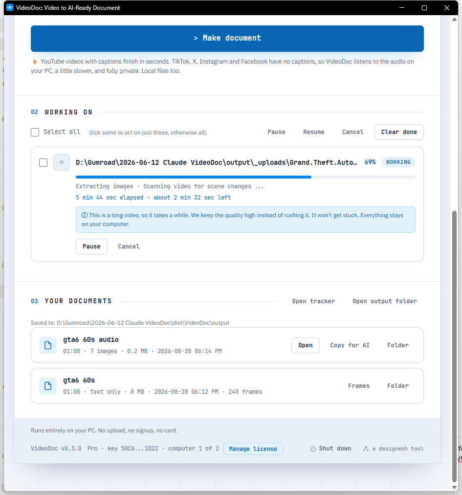
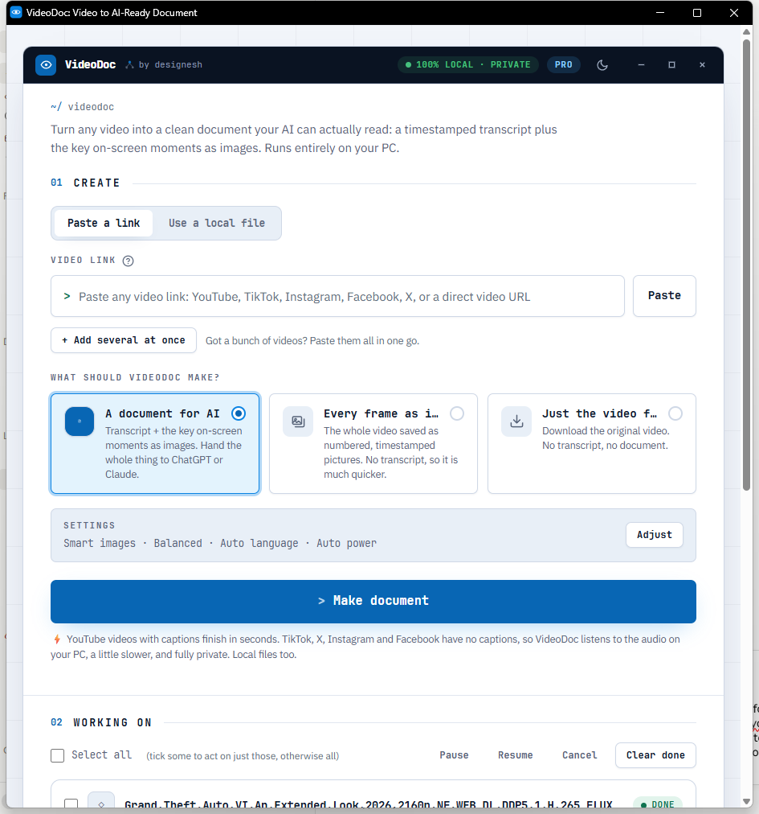

I put the GTA 6 Extended Look through my own tool
I took the 27 minute GTA 6 Extended Look and ran it through VideoDoc twice. Once for pictures: 6,418 frames, four every second, all in full 4K. Once for the words: 205 lines of speech and the 291 screens worth keeping, in one PDF. Both ran on my own PC, offline. The whole thing took about 11 minutes.
A friend asked me a simple question. Can your tool handle something big? Not a lecture, not a Zoom call. Something long, in 4K, with fast cuts and music over the talking.
So I used the biggest thing on my drive. The GTA 6 Extended Look. 27 minutes. 4K. 2.5 GB. I did not tune anything for it. I opened VideoDoc, picked the mode, and pressed the button, same as you would.
Here is what came back.
Run one: every frame as pictures
The first run was pictures only. No words, no PDF. Just the video, cut into images, four every second.
Four a second sounds like a lot. It is the number that stops you missing things. Nothing you are meant to read stays on screen for less than a quarter of a second, so if you sample four times a second, you cannot miss it. A wanted poster, a street name, a number plate. It is in there.
It grabbed 6,439 images and kept 6,418. The 21 it dropped were exact copies of the picture before them, so nothing was lost. On a slide deck it would have thrown away thousands, because a slide sits still. A film like this barely repeats a single frame, and the number tells you that honestly.
Every image is full 4K, 3840 by 2160. Not a shrunk preview. You can zoom right into a sign at the back of a shot and still read it.
Seven minutes. 1.9 GB on disk.
Run two: the words, and the screens worth keeping
The second run was the proper document. This one listens to the video and writes down what is said, then picks out the screens worth keeping and puts them next to the right words.
It wrote down 205 lines of speech, about 2,300 words. There are no captions on this file, so it listened to the audio on my own PC. Nothing went to a server. My internet could have been off.
It also picked 291 screens out of the 27 minutes. Not every frame this time, only the ones where the picture actually changes to something new. That is what makes a document you can read instead of a pile you have to dig through.
Out came one PDF, 18 MB, plus the same thing as a Markdown file and a plain text transcript. Eleven and a half minutes.

The bit I was actually worried about
Loud music over quiet talking. That is where these things usually fall apart, and this file has plenty of it.
It got the talking. Short lines, people cutting across each other, street slang. The first line it wrote down was a lookout saying they think someone knows they are coming. That is a hard line to catch, and it caught it.
It is not perfect. Where two people talk at once it picks one. Where music swells it sometimes shortens a line. I would not hand this to a court. For finding the moment someone said a thing, so you can jump straight to it, it is more than good enough.
I am not publishing the frames or the transcript from this video, and neither should you. It is Rockstar's film on Netflix, and nobody said you may hand out copies of it. What I am showing you is the numbers my own machine produced and the tool that produced them. Run it on your own copy, or on a trailer Rockstar has put on YouTube for everyone, and the output is yours to look at.
Why I keep both runs
People ask which mode is the right one. They do different jobs.
- Pictures only when you want to look. Every frame, in order, named by the exact second it came from. Good for spotting a detail, building a breakdown, or feeding pictures to an AI.
- The document when you want to read and search. Words plus the screens that matter, in one file you can drop into ChatGPT or Claude and ask questions about.
For this file I wanted both. The pictures to look through, the document to search. Two runs, about 18 minutes of my evening, and I never opened a video editor.

Try it on the biggest file you own.
The browser version is free and needs no signup. Pro is $19 once, for life, on 2 computers, with 30 days to change your mind.
Do it yourself, on something you are allowed to use
- Get the video. A file you already own, or a trailer from an official channel. VideoDoc takes a link or a file off your drive.
- Open VideoDoc and pick your mode. Every frame as images for pictures, A document for AI for words plus screens.
- Press the button and leave it. It shows the time left and it will not get stuck.
- Open the folder when it finishes. Pictures come with a spreadsheet listing every one and its exact moment, so you can jump straight back to it.
If you have never done this before, try a two minute clip first. You will see the shape of what comes out in under a minute, and then you will know whether the big one is worth your evening.
One honest number about your computer
Eleven minutes was on my machine, listening to the audio, no graphics card help. Yours will differ. A video that already has captions, like most of YouTube, skips the listening entirely and finishes in seconds instead of minutes. That is the single biggest thing that changes the time.
And if your graphics card cannot help for any reason, it quietly moves to your processor and keeps going. It does not stop and show you an error you cannot do anything about. I fixed that one the hard way.
Quick questions
How many frames are in the GTA 6 Extended Look?
At four frames a second across 26 minutes 50 seconds, 6,439. VideoDoc kept 6,418 of them and dropped 21 that were exact copies of the frame before. The film's own frame rate is higher, but sampling four a second is enough that nothing readable can appear and disappear between two pictures.
Can I get a transcript of the GTA 6 Extended Look?
You can make one from your own copy. VideoDoc listened to the file on my PC and wrote down 205 lines, about 2,300 words. I am not handing out that transcript, because the film is Rockstar's, but the tool that made it takes about eleven minutes.
Does the video get uploaded anywhere?
No. The listening, the frame saving and the duplicate removal all happen on your own computer. A file already on your drive never touches the internet at all.
Are the frames full quality?
Yes. Every one of the 6,418 came out at 3840 by 2160, the same as the source. They are JPEGs, so a folder of them is 1.9 GB.
How long does 27 minutes of 4K take?
About seven minutes for the pictures, and eleven and a half for the full document with the speech written down. On a video that already has captions the document part finishes in seconds, because there is nothing to listen to.
Is it legal to do this?
Making a copy for yourself to study is a different thing from handing copies to other people. Run it on what you own or on something an official channel has published, keep the output for your own use, and quote a line or two if you write about it. Publishing the whole thing is where people get into trouble.
Pick the longest video you own and give it eleven minutes tonight. You will stop scrubbing back and forth through it ever again.

I am a telecom engineer and business analyst from Pakistan, and I build small honest desktop tools under Designesh. I made VideoDoc because I wanted my AI to read the lectures I study from. Everything here is tested on my own machine first.